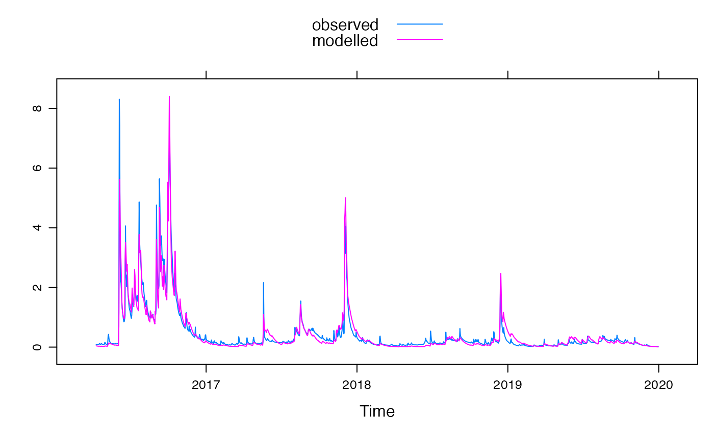

An implementation of the HBV rainfall-runoff model.
hbv.sim( DATA, tt, cfmax, sfcf, cfr, cwh, fc, lp, beta, cet, return_state = FALSE, initialise_sm = FALSE, PET ) hbvrouting.sim( U, perc, uzl, k0, k1, k2, maxbas, initial_slz = I(0), epsilon = hydromad.getOption("sim.epsilon"), return_components = FALSE ) hbv.ranges() hbvrouting.ranges()
| DATA | A time-series like object with columns P (precipitation in mm), T (average air temperature in ºC) and E (potential evapotranspiration in mm). If E is not supplied then the PET argument must be used. |
|---|---|
| tt | Threshold temperature for snow and snow melt in degrees Celsius. |
| cfmax | Degree-day factor for snow melt (mm/(ºC.day)). |
| sfcf | Snowfall correction factor. Amount of precipitation below threshold temperature that should be rainfall instead of snow. |
| cfr | Refreezing coefficient for water in the snowpack. |
| cwh | Liquid water holding capacity of the snowpack. |
| fc | Maximum amount of soil moisture storage (mm). |
| lp | Threshold for reduction of evaporation. Limit for potential evapotranspiration. |
| beta | Shape coefficient in soil routine. |
| cet | Potential ET correction factor. Optional if a full PET series is provided. |
| return_state | Whether to return the state variables. |
| initialise_sm | If true, the soil moisture store is initialised to
equal |
| PET | A list containing named objects "PET" and optionally "Tmean".
PET and Tmean must be vectors of length 12 or 365 that represent mean values.
Optional if |
| U | Effective rainfall series/recharge series. |
| perc | Maximum percolation from upper to lower groundwater storage. |
| uzl | Threshold for quick runoff for k0 outflow (mm). |
| k0 | Recession coefficient (quick runoff). |
| k1 | Recession coefficient (upper groundwater storage). |
| k2 | Recession coefficient (lower groundwater storage). |
| maxbas | Routing, length of triangular weighting function (days). |
| initial_slz | Initial value for the lower store (SLZ). Defaults to 0. |
| epsilon | Values smaller than this in the output will be set to zero. |
| return_components | Whether to return state variables from the routing routine. |
The timeseries of simulated streamflow (U). If return state is set to true, the state variables of the model are also returned. These include: snow depth (Snow), soil moisture (SM), potential evapotranspiration (PET) and actual evapotranspiration (AET), .
For hbv_routing, the routed effective rainfall series (X) is returned. If return components is to true, the state variables of the routing model are returned: upper groundwater storage (SUZ), lower groundwater storage (SLZ), runoff from quick flow (Q0), upper groundwater (Q1) and lower groundwater (Q2).
Default parameter ranges are guided by Seibert (1997) and Seibert and Vis (2012) and (see the references section). Parameter ranges for your catchment may require either a more restricted or wider range.
This implementation of this HBV model closely follows the
description of HBV light by Seibert and Vis, 2012. Daily average temperature
data is required for the snow routine. If daily potential evapotranspiration
(PET) data is not provided in DATA, then the PET is estimated using the
HBV method and the PET and cet arguments must be specified. The list
needs to contain a vector named "PET" containing daily average (or matching
the timestep of DATA) values of length 12 (monthly) or 365 (days of year).
"Tmean" can also be provided in this list, of length 12 or 365, otherwise
average monthly values will be calculated from the average temperature
series in DATA. See an example below of how to pass average values.
Bergström, S. and Forsman, A.: Development of a Conceptual Deterministic Rainfall-Runoff Model, Nordic Hydrology, 4(3), 147–170, 1973.
Bergström, S.: The HBV Model: Its Structure and Applications,Swedish Meteorological and Hydrological Institute (SMHI), Hydrology, Norrköping, 35 pp., 1992.
Seibert, J. (1997). Estimation of Parameter Uncertainty in the HBV Model. Hydrology Research, 28(4–5), 247–262.
Seibert, J. and Vis, M. (2012). Teaching hydrological modeling with a user-friendly catchment-runoff-model software package. Hydrology and Earth System Sciences, 16, 3315–3325, 2012.
hydromad(sma='hbv', routing='hbvrouting') to work with
models as objects (recommended).
Alexander Buzacott (abuz5257@uni.sydney.edu.au)
# Using example dataset Corin with daily P, Q, potential ET and average T data(Corin) # See default par ranges with hbv.ranges() or hydromad.getOption('hbv') hydromad.getOption("hbv")#> $tt #> [1] -2.5 2.5 #> #> $cfmax #> [1] 1 10 #> #> $sfcf #> [1] 0.4 1.0 #> #> $cfr #> [1] 0.0 0.1 #> #> $cwh #> [1] 0.0 0.2 #> #> $fc #> [1] 50 500 #> #> $lp #> [1] 0.3 1.0 #> #> $beta #> [1] 1 6 #>#> $perc #> [1] 0 3 #> #> $uzl #> [1] 0 100 #> #> $k0 #> [1] 0.05 0.50 #> #> $k1 #> [1] 0.01 0.30 #> #> $k2 #> [1] 0.001 0.100 #> #> $maxbas #> [1] 1 7 #># Create model mod <- hydromad( DATA = Corin, sma = "hbv", routing = "hbvrouting" ) # Fit using the optim routine with the KGE objective function fit <- fitByOptim(mod, objective = hmadstat("KGE")) # Summary statistics and plot of the fit summary(fit)#> #> Call: #> hydromad(DATA = Corin, sma = "hbv", routing = "hbvrouting", perc = 2.9511, #> uzl = 37.6806, k0 = 0.20834, k1 = 0.198619, k2 = 0.0644331, #> maxbas = 1.62593, tt = -1.41364, cfmax = 5.18182, sfcf = 0.921212, #> cfr = 0.0383838, cwh = 0.165657, fc = 277.659, lp = 0.933893, #> beta = 2.89523) #> #> Time steps: 1361 (0 missing). #> Runoff ratio (Q/P): (0.4495 / 2.315) = 0.1942 #> rel bias: -0.000367 #> r squared: 0.9172 #> r sq sqrt: 0.8991 #> r sq log: 0.8228 #> #> For definitions see ?hydromad.stats #>#> [1] 0.9203671xyplot(fit)